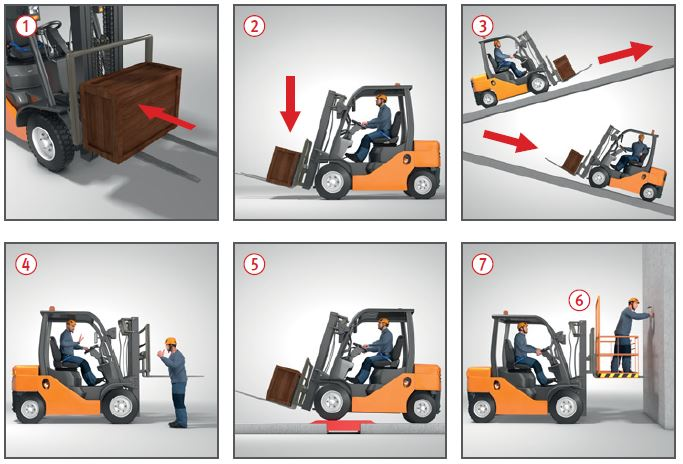

Gefährdungen
- Falsch aufgenommene Last, Überlastung des Gabelstaplers und unzureichende Ausbildung des Fahrers haben oft schwere Unfälle zur Folge.
Schutzmaßnahmen
- Last dicht am Hubmast laden und auf beide Gabelzinken gleichmäßig verteilen. Last gegen Verschieben sichern
 .
.
- Beim Beladen Tragfähigkeitsdiagramm beachten.
- Nur ausgebildete und vom Unternehmer schriftlich beauftragte Gabelstaplerfahrer einsetzen, die mindestens 18 Jahre alt sind.
- Betriebsanweisung erstellen. Sie muss u. a. Angaben enthalten über:
- Betriebsbedingungen,
- zugelassene Verkehrswege,
- Lagerung, Lagerflächen, Stapelung,
- evtl. Mitnahme von Personen,
- evtl. Verwendung von Anbaugeräten, Anhängern, Arbeitsbühnen.
- Gabelstapler mit bodenfrei angehobener Last (< 50 cm) verfahren
 .
.
- Beim Befahren von Steigungen und Gefälle Last bergseitig führen
 .
.
- Fahrerrückhalteeinrichtungen wie z. B. Beckengurt, Bügeltür und Kabinentür sind zu benutzen.
- Nur Personen mitnehmen, wenn Mitfahrersitze vorhanden sind und das Mitfahren erlaubt ist (s. Betriebsanweisung bzw. innerbetriebliche Regelungen)
 .
.
- Gegen unbeabsichtigte Bewegung mit der Parkbremse sichern, und gegen unbefugte Benutzung durch Abziehen des Schlüssels sichern.
- Gabelstapler nur vom Fahrerplatz aus bedienen.
- Nicht unter angehobener Last hindurchgehen bzw. aufhalten.
- Beim Befahren von Ladebrücken auf deren Tragfähigkeit und Breite achten. Ladebrücken gegen Verschieben sichern
 .
.
- Bei Wartungsarbeiten unter der hochgestellten Gabel ist diese abzustützen.
- Können Arbeitsmittel zum bestimmungsgemäßen Heben von Personen nicht eingesetzt werden, so darf bei Montagearbeiten von geringer Dauer ausnahmsweise eine Arbeitsbühne mit Rückenschutz verwendet werden, sofern geeignete Maßnahmen ergriffen wurden, welche die Sicherheit gewährleisten und eine angemessene Überwachung sicherstellen.
- Der Rückenschutz
 muss mindestens 1,80 m hoch und durchgriffsicher sein. Die Arbeitsbühne ist formschlüssig z. B. beim Aufschieben auf die Gabelzinken zusätzlich mit einem Sicherungsbolzen gegen Abrutschen sichern. Die Tragfähigkeit des Frontgabelstaplers muss mind. das Fünffache des Eigengewichts der Arbeitsbühne einschl. Zuladung betragen
muss mindestens 1,80 m hoch und durchgriffsicher sein. Die Arbeitsbühne ist formschlüssig z. B. beim Aufschieben auf die Gabelzinken zusätzlich mit einem Sicherungsbolzen gegen Abrutschen sichern. Die Tragfähigkeit des Frontgabelstaplers muss mind. das Fünffache des Eigengewichts der Arbeitsbühne einschl. Zuladung betragen  .
.
- Beim Betrieb von Gabelstaplern mit Verbrennungsmotor in Räumen auf Abgasreinigung achten, z. B. Einsatz von Katalysatoren oder Abgasfiltern.
Zusätzliche Hinweise
Flurförderzeuge beim Einsatz auf öffentlichen Straßen
- Bei einer Höchstgeschwindigkeit von mehr als 20 km/h ist ein amtliches Kennzeichen erforderlich. Der Fahrer muss bei einer durch die Bauart bestimmten Höchstgeschwindigkeit von mehr als 6 km/h im Besitz einer Fahrerlaubnis sein. Die erforderliche Fahrerlaubnisklasse ist abhängig vom zulässigen Gesamtgewicht des Gabelstaplers oder von der maximalen Höchstgeschwindigkeit.
- Bei einer Höchstgeschwindigkeit von mehr als 25 km/h ist Luftbereifung erforderlich.
- Bremsanlage muss aus zwei voneinander unabhängigen Bremsen bestehen.
- Bei dem Betrieb im öffentlichen Straßenverkehr sind weitere Anforderungen der Fahrzeug-Zulassungsverordnung (FZV) einzuhalten.
- Beleuchtung muss fest eingebaut und betriebsbereit sein; dazu gehören: Scheinwerfer, Fahrtrichtungsanzeiger, Begrenzungsleuchte, Rückstrahler, Rückfahrscheinwerfer, Schlussleuchte, Blinkleuchte und Kennzeichenbeleuchtung.
- Bei Gabelstaplern mit zulässigem Gesamtgewicht ab 4 t Unterlegkeil mitführen.
- Gabelzinken mit rot-weiß gestreifter Schutzvorrichtung abdecken oder hochklappen.
Flurförderzeuge (Gabelstapler) mit Flüssiggasantrieb
- Flüssiggasflaschen (Treibgasbehälter) nicht mit scharfkantigen Festhaltevorrichtungen am Fahrzeug befestigen.
- Treibgasbehälter, Leitungen, Armaturen und Schläuche dürfen nicht über die Begrenzung des Gabelstaplers hinausragen.
- Treibgasbehälter, Leitungen, Armaturen und Schläuche vor übermäßiger Erwärmung (vor direkter Sonneneinstrahlung) schützen.
- Treibgasbehälter nicht in Garagen wechseln.
- Gabelstapler nur in durchlüfteten Räumen über Erdgleiche abstellen und dabei die erforderlichen Schutzbereiche beachten. Im Abstand von 3,00 m dürfen sich keine Kelleröffnungen, Gruben, Bodenabläufe, Kanaleinläufe usw. befinden.
- Bei Betriebsschluss Hauptsperreinrichtung für die Gasversorgung schließen.
- Flüssiggasantrieb so einstellen, dass der Schadstoffgehalt im Abgas so gering wie möglich ist.
- Einstellvorrichtung für das Gas-Luft-Gemisch gegen unbeabsichtigtes Verstellen sichern, z. B. durch Versiegeln oder Verplomben.
- Beim Wechseln der Schläuche in der Treibgasanlage darauf achten, dass nur zugelassene Schläuche verwendet werden.
- Für den Betrieb von Gabelstaplern mit Flüssiggasantrieb unter Erdgleiche gelten Sonderregelungen.
Prüfungen
- Art, Umfang und Fristen der wiederkehrenden Prüfungen festlegen (Gefährdungsbeurteilung) und einhalten, z. B.:
- 1 x jährlich durch eine "zur Prüfung befähigte Person" (z. B. Sachkundiger),
- Schadstoffgehalt im Abgas von mit Flüssiggas angetriebenen Gabelstaplern mindestens halbjährlich, durch eine "zur Prüfung befähigte Person" prüfen und auf den erreichbaren niedrigsten Wert bringen.
- Ergebnisse dokumentieren.
Arbeitsmedizinische Vorsorge
- Für den Flurförderzeugfahrer die arbeitsmedizinische Vorsorge nach Ergebnis der Gefährdungsbeurteilung veranlassen (Pflichtvorsorge) oder anbieten (Angebotsvorsorge). Hierzu Beratung durch den Betriebsarzt.
07/2021